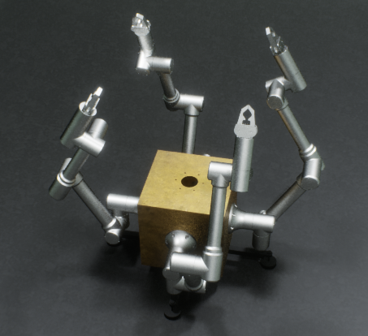
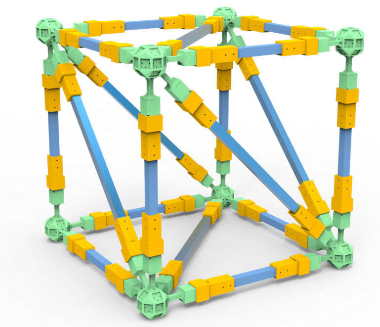
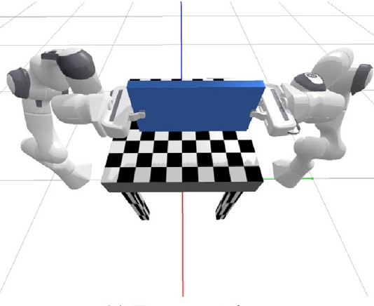
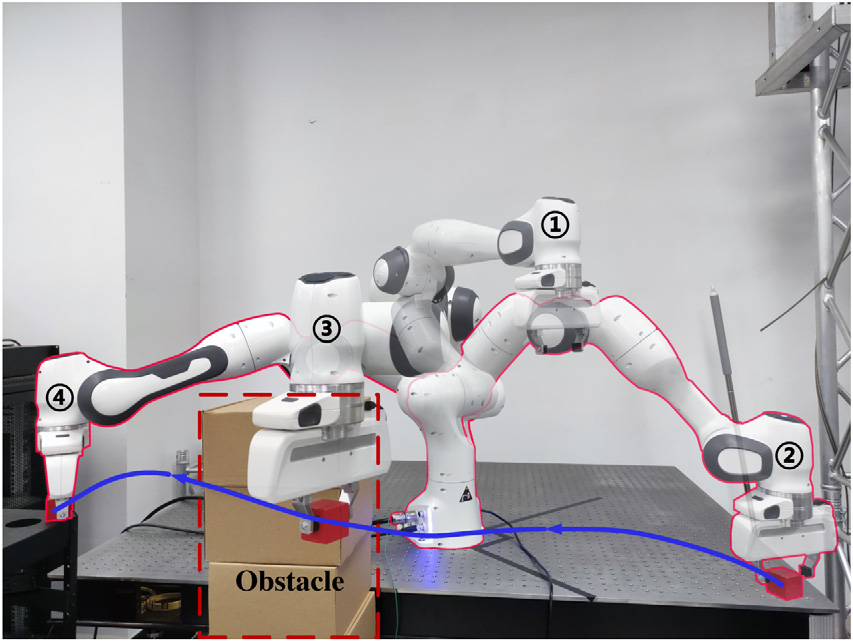

|
Tao Lin | 林涛 我是哈尔滨工业大学航天学院卫星技术研究所的三年级博士生，导师为曹喜滨教授，副导师为岳程斐教授，课题为面向在轨装配的多分支航天器任务与运动规划。 |
{kind=link}
主要学术经历我的研究方向为在轨服务，装配规划，机器人任务运动规划，技术栈较为全面，包含机械结构设计、硬件电路设计与软件算法开发。 |

|
动态环境下的模块化多层级任务运动重规划框架
Tao Lin, Chengfei Yue, Ziran Liu, Xibin Cao RA-L, 2024 (IROS Oral Presentation) project page / arXiv 提出了一种基于采样性TAMP算法的实时重规划框架，在执行过程中，持续在任务层级和运动层级进行重规划，以快速应对动态环境。 |
|

|
基于通用平移与旋转步态的多臂航天器分层路径规划方法
Chengfei Yue, Tao Lin, Xiao Zhang, Xueqin Chen, Xibin Cao Science China Technological Sciences, 2023 Paper 针对四臂机器人的攀爬移动，设计了平移、同面旋转与跨面旋转，三种基础移动步态。并基于步态库，提出了多臂航天器攀爬任务的分层路径规划框架，上层利用栅格化地图使用跳点法搜索全局参考移动路径；中层根据全局路径生成攀爬面序列，结合步态库遍历生成步态序列，根据朝向约束与能量指标筛选最优步态序列；下层根据步态序列，设计机器人动基座运动学，将机械臂末端的绝对轨迹解析为与基座的相对轨迹，并在关节角度解算时，利用零空间实现局部臂杆的避障调节。 |

|
单臂机器人无治具自主装配规划
Tao Lin, Chengfei Yue, Peiji Wang, Haoyong Yu, Xibin Cao Science China Technological Sciences, 2025 (Under Review) project page 提出面向非结构环境的单臂机器人无治具装配框架。在装配序列规划中，引入"稳定放置-几何碰撞-支撑负载"的支撑面评估机制，显著提升无治具装配的物理可行性。使用深度优先搜索结合分支定界技巧，在充分探索的前提下提高了规划效率；在装配操作规划中，设计了搬运、插入、旋拧等技能，综合考虑多个技能原语的运动约束规划夹取位姿，确保多技能原语连续执行的稳定性。 |
|

|
基于技能原语的空间机器人桁架装配控制方法
林涛，岳程斐，郭靖宇，曹喜滨 宇航学报, 2025 (Under Review) 设计并制作了径向快装桁架，依靠弹性插销与套筒完成锁紧。建立桁架杆装配过程中对准、压入、锁紧的接触力学模型，并设计相应的装配技能原语，设计解析器将技能原语参数转化为机器人末端行为，利用桁架节点的弹性实现了负间隙下的桁架杆装配。 |
|
|
基于气浮轴承的航天机器人实验平台设计与演示
Ziran Liu, Tao Lin, Hongxu Wang, Chengfei Yue, Xibin Cao Robio, 2022 设计并搭建一种基于气浮轴承的双臂空间机器人地面模拟器，在控制系统中引入模型预测控制与切换策略，针对不同操作阶段灵活分配喷气推力器与动量轮，实现轨迹规划、姿态调控与捕获任务全过程的精确控制 |
|
|
面向空间机器人序列作业的优先级切换模型预测控制
Ziran Liu, Zijian Dai, Chengfei Yue, Tao Lin, Antonella Ferrara, Xibin Cao TAES, 2025 Paper 一种基于优先级的切换模型预测控制方法，通过引入软优先级策略调节各阶段任务目标，有效平衡空间机器人顺序操作中的冲突，提升整体任务效率与过渡平滑性。 |
|

|
面向空间多臂机器人协作技能学习的演示增强策略搜索方法
Tian Gao, Chengfei Yue, Xiaozhe Ju, Tao Lin Chinese Journal of Aeronautics, 2025 Paper 一种融合演示学习与强化学习的策略搜索方法，用于高效学习空间多臂机器人的协作操作技能，并通过实验验证了其在抓取与装配任务中的优越性能。 |
|

|
基于概率运动原语的多任务学习框架
Chengfei Yue, Tian Gao, Lang Lu, Tao Lin, Yunhua Wu Computers & Industrial Engineering, 2024 Paper 一种基于条件概率运动基元（ProMP）的多任务学习框架，实现机器人在多个任务间的快速技能迁移与轨迹外推，具备高效的学习与广泛的泛化能力。 |
创业经历 - 桌面级教育机器人创业公司 |
|
联合创始人
|
主要获奖荣誉 |
||||||||
|
|
Thanks Jon Barron for sharing this template. |